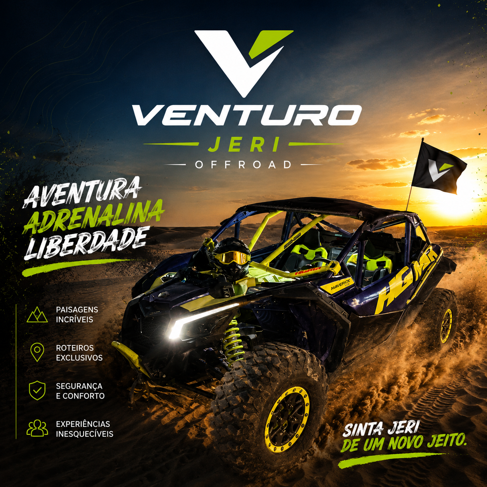
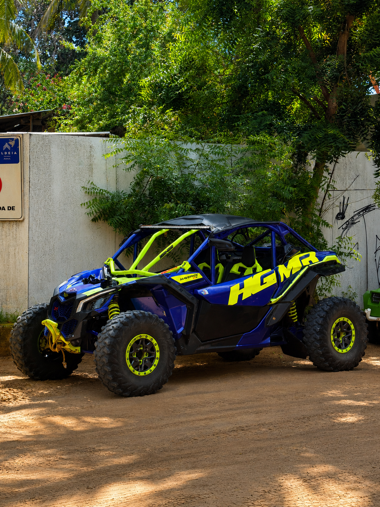

Jericoacoara, Ceara
Venturo Jeri Offroad
UTV para 2 lugares em rotas de areia, praia e lagoas, com potencia para sentir Jeri de perto.
Experiencia premium
Forca de off-road com visual de cartao postal.

Tabela de roteiros
Escolha o nivel da aventura
Volta panoramica
Ideal para sentir o UTV, cruzar areias e fazer paradas rapidas em pontos proximos.
R$ 1.650Jeri essencial
Mais tempo de pilotagem, pausas para fotos e ritmo confortavel para curtir a paisagem.
R$ 2.100Duna do Funil
Trajeto com areia, vento e mirantes naturais para quem quer uma rota mais marcante.
R$ 2.600Ilha do Amor
Experiencia completa para viver o litoral com mais distancia, tempo e presenca.
R$ 3.000
No comando
Uma maquina feita para atravessar a paisagem.
A proposta e simples: sair do passeio comum e entrar numa experiencia com presenca, som, areia e visual aberto. O UTV leva ate duas pessoas e transforma o caminho em parte principal da viagem.
- Roteiros para casal, amigos ou criadores de conteudo.
- Paradas para fotos em praia, dunas e cenarios naturais.
- Agendamento direto com confirmacao do melhor horario.
Galeria
O UTV em Jeri
Reserva rapida
Monte sua mensagem de agendamento.
Escolha o roteiro, informe data e horario desejados, e o site prepara uma mensagem pronta para envio.